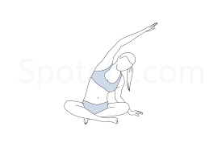
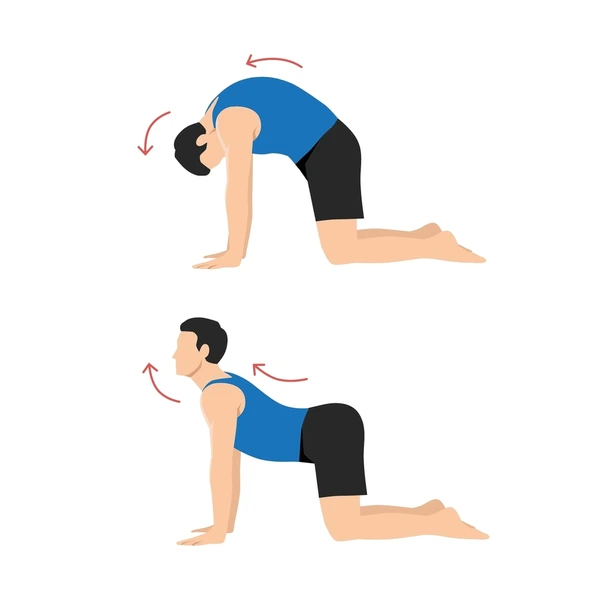
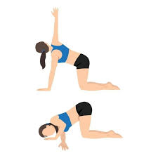
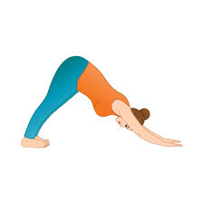
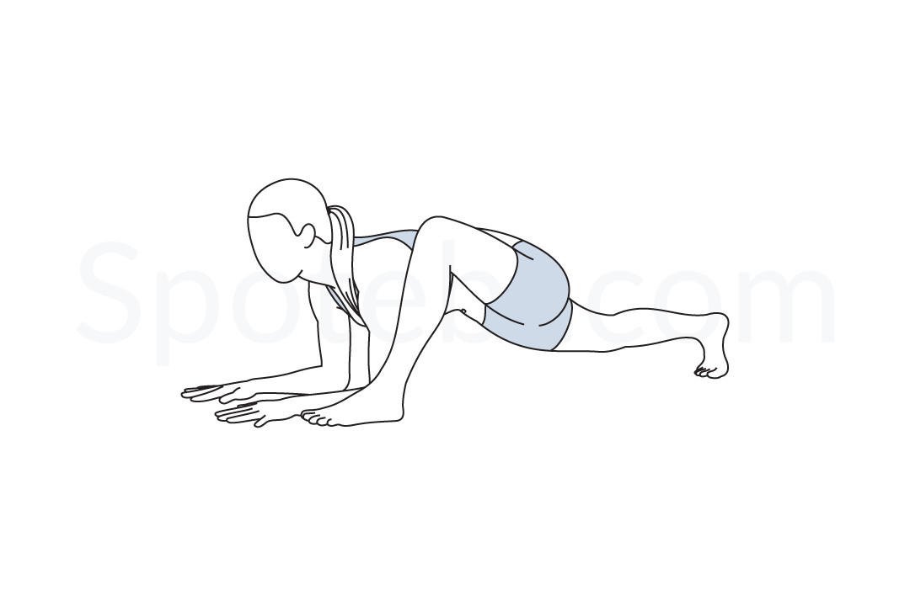
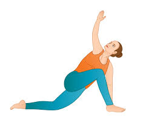
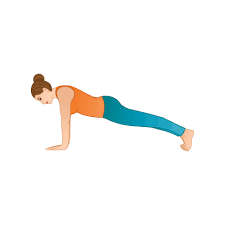
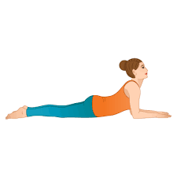
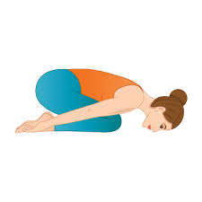

Overview: Why a short morning flow
- Gently lubricates joints and wakes up major muscle groups.
- Pairs movement with breath to calm the nervous system.
- Quiet, no-equipment, mat-space friendly — perfect for dorms.
Safety tip: Move slowly, pain-free range only. If dizzy or sharp pain, stop and rest.
Breath-in (30–45s)
- Box breathing 4–4–6 × 3 cycles (inhale–hold–exhale).
- Posture check: sit tall, relax jaw/shoulders, soften eyes.
9-Pose Morning Sequence
1) Neck Stretch (L/R · 3–5 breaths)
Focus: side neck, traps · soften jaw, slow exhale.

- Sit tall; drop left ear to left shoulder; right fingers can walk out.
- 3–5 breaths; return to center; switch sides.
2) Cat–Cow (3 rounds)
Focus: spine mobility · wrists under shoulders, knees under hips.

- Inhale: drop belly, lift chest and tail (Cow).
- Exhale: round spine, chin to chest (Cat).
3) Thread the Needle · Gate Pose variation (5 breaths)
Focus: thoracic rotation, outer hip.

- Right leg extends to side; reach left arm up, then thread under to rest shoulder/ear.
- Optional: catch right big toe with left peace fingers; breathe into upper back.
3) Downward-Facing Dog
Focus: Hamstrings, calves, shoulders

- From Low Lunge Twist, place right hand down; lift hips to Down Dog.
- Feet hip-width (or wider); gently pedal the heels.
- Draw belly in; breathe 3–5 deep nose breaths.
5) Lizard Pose (4 breaths)
Focus: hip flexors, adductors.

- Step right foot to outside of right hand; back knee down; lift heart, drop hips.
6) Low Lunge Twist (3 breaths)
Focus: hip flexor length + thoracic rotation.

- Tuck back toes; lift knee; left hand plants; right arm reaches up; gaze easy.
7) Plank Pose (20–30s)
Focus: core, shoulders · ribs in, long spine.

- Hands under shoulders; press floor away; steady breath to lower belly.
8) Sphinx Pose (4 breaths)
Focus: gentle backbend · chest opening.

- Elbows slightly ahead of shoulders; draw upper arms back; broaden collarbones.
9) Child’s Pose (5 breaths)
Focus: decompression · calm finish.

- Big toes touch; knees as wide as comfy; walk hands forward; soften forehead.